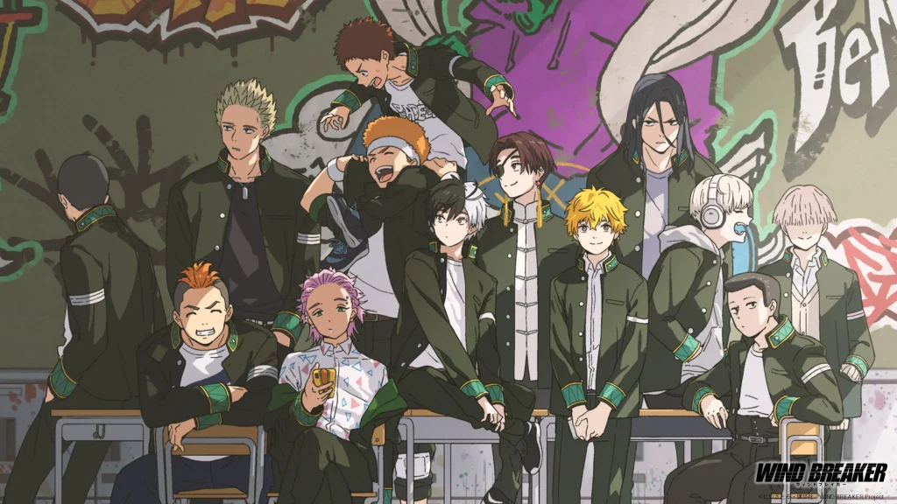

關於我們
有貓餅 公司成立於 2020 年，我們致力於科技創新與優質服務。
2019年 一群貓咪在零食罐旁開會，決定創立「有貓餅公司」，口號是：「沒有餅乾的貓生是不完整的！」。
2020年 推出第一款「毛病餅」。配方表印錯，結果卻成為爆款。大家笑說：「這餅乾有病，跟我一樣。」意外開始了一場「毛病共鳴」。
2021年 官網系統出現「自動多加一包」Bug。原本很慌張，結果顧客說：「太棒了！這是最暖的毛病。」公司因此正式提出：「毛病是送給彼此的禮物」。
2022年 人類被徵招加入「有貓餅公司」，成為打工仔。
2023年 開出實體店「故障咖啡」。店內菜單字體故意印歪，杯子偶爾有缺角，卻意外成為「最真實、最療癒」的聚會場所。
2024年 推出「毛病留言牆」。顧客可以留下自己的小故事，並隨機收到一塊「安慰餅乾」。那一年，留言牆累積了超過十萬則小毛病，而公司收到的訊息都是一句：「原來我並不孤單。」
2025年 首發「不對稱系列」，每片貓咪圖案的餅乾都刻意有缺角。
2026年 準備推出「404 餅乾盲盒」。
